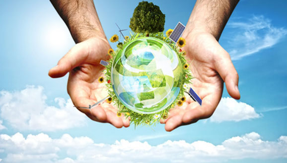
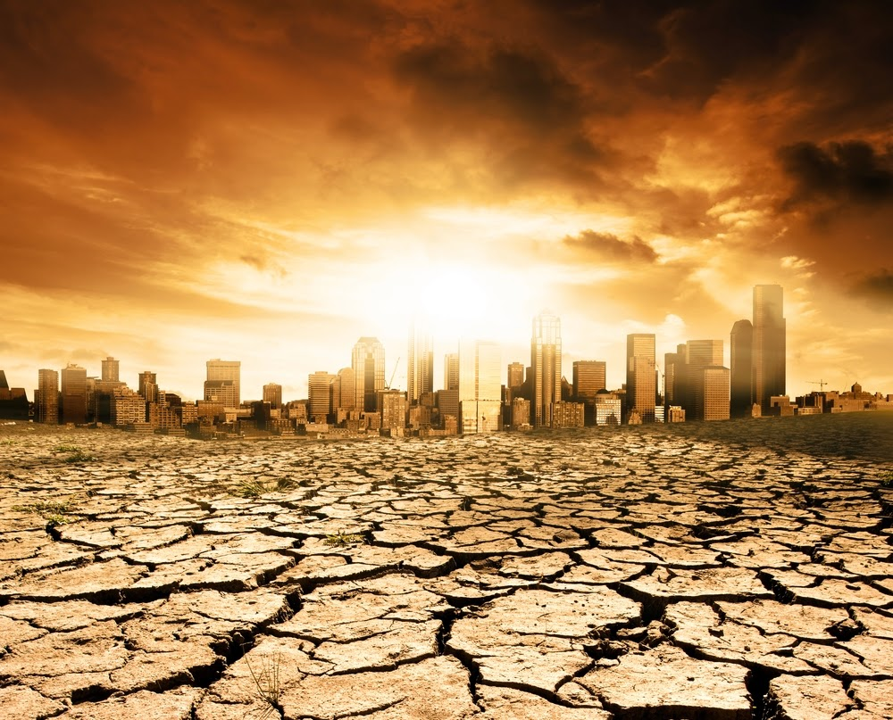

This is my article on Global Warming

Throughout its long history, Earth has warmed and cooled time and again.
Climate has changed when the planet received more or less sunlight due to subtle shifts in its orbit,
as the atmosphere or surface changed, or when the Sun’s energy varied. But in the past century, another
force has started to influence Earth’s climate: humanity.
How does this warming compare to previous changes in Earth’s climate?
How can we be certain that human-released greenhouse gases are causing the warming?
How much more will the Earth warm? How will Earth respond? Answering these questions
is perhaps the most significant scientific challenge of our time.
Global warming is the unusually rapid increase in Earth’s average surface temperature over the
past century primarily due to the greenhouse gases released as people burn fossil fuels. The global
average surface temperature rose 0.6 to 0.9 degrees Celsius (1.1 to 1.6° F) between 1906 and 2005, and
the rate of temperature increase has nearly doubled in the last 50 years. Temperatures are certain to go up further.
Advantages of Global Warming

Arctic, Antarctic, Siberia, and other frozen regions of the earth may experience more plant growth and milder climates.
Global Warming is the greatest collective adaptive challenge and transformational, evolutionary adventure in human history.
It will force us to grow in evolutionary maturity as a global society and one human family.
The next ice age may be prevented from occurring.
Northwest Passage through Canada's formerly-icy north opens upto sea transportation.
Less need for energy consumption to warm cold places.
Fewer deaths or injuries due to cold weather.
Longer growing seasons could mean increased agricultural production in some local areas.
Mountains increase in height due to melting glaciers, becoming higher as they rebound against the missing weight of the ice.
Disadvantages of Global Warming

Ocean circulation disrupted, disrupting and having unknown effects on world climate.
Higher sea level leading to flooding of low-lying lands and deaths and disease from flood and evacuation.
Deserts get drier leading to increased desertification.
Changes to agricultural production that can lead to food shortages.
Water shortages in already water-scarce areas.
Starvation, malnutrition, and increased deaths due to food and crop shortages.
More extreme weather and an increased frequency of severe and catastrophic storms.
Increased disease in humans and animals.
"Nature does not need us but we need nature"
"Lets Conserve the nature to save your future"